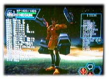

| 『 ファンタシースターオンライン 』 | バトル関連担当 | 藤原 賢一 |
| 『 ファンタシースターオンライン 』 | バトル関連担当 | 藤原 賢一 |
| ■プロフィール■ プランナー。学生時代にモノ作りの面白さに魅入られ、「あまり体験したことがない世界を選ぼう」という理由から、それほど遊んだことのないゲーム業界に。『ソニックアドベンチャー』『PSO』『PSO Ver.2』の開発にたずさわりました。ちなみにセガを選んだのは“セガバンダイ”にだまされて。（冗談です･･･たぶん。） |
|
| ■『PSO』には様々な種類の武器が登場しますが、あれらのアイディアはどのようにして生まれたのでしょうか？ |
 アイテム担当のデザイナー２名との、雑談のような話し合いを繰り返して生まれたのがほとんどです。とにかくあまり自分達の好みにとらわれず、どんなプレイヤーも１つは「欲しい！」と思える武器があるように、品揃えには注意を払いました。 アイテム担当のデザイナー２名との、雑談のような話し合いを繰り返して生まれたのがほとんどです。とにかくあまり自分達の好みにとらわれず、どんなプレイヤーも１つは「欲しい！」と思える武器があるように、品揃えには注意を払いました。フライパンやハリセンなど、「世界観的にどうかな？」と思うものありましたが、結果として入れて良かったと思います。 |
■その中でもお気に入りの武器は？ 個人的には各エネミーウェポンが気に入ってます。きっかけは自分が担当したデルセイバー。バランス調整中に何度もあいつに殺されて腹が立って、「あいつの手で武器を作ってやる！」と。シノワビートにしろ、カオスブリンガーにしろ、自分がプレイしてて殺されて腹の立ったエネミーを武器に変えてやりました。（それらのエネミーの企画を担当したのも僕なんですけどね（笑））。 |
| ■では、逆に担当した中で気に入っているエネミーは？ |

やっぱりデルセイバーなんですよね。 ヒルデベアも好きなんですが、デルセイバーはそれぞれに好みの相手を持ってて、ハンター好きのデルセイバーとか、ニューマン好き、女好き、男好き･･･などイロイロいます。 さすがに好みの子が遠くに離れていれば近くのキャラに寄っていきますが、なぜか特定のデルセイバーによく飛びつかれる、もしくは寄ってくるという人は、そのデルセイバーに気に入られていると思って、逃げずに闘ってあげてください。あとシノワビート系もイロイロにぎやかで好きです。 |
| ■レア武器であるロケットパンチはユーザーの声を元に生まれたと聞いたのですが 本当ですか？ |
| 本当です。『PSO』が発売されてしばらくした頃、BBSなどで「ロケットパンチを手に入れた！」という情報が流れまして。こちらとしてはそんな武器を作った記憶がないのに続々と「僕も手に入れました！」と書いてある。中には出現する場所やゲームLVも書いてある。あまりに堂々と書いてあるので、正直焦りましたね。「俺の知らないところでデザイナーの誰かが入れたのか？」とか。 結局、真相はわからなかったのですが、「とにかく皆が望んでるんだから、それはちゃんと入れるべきだろう！」ということで『Ver.2』で作りました。その他の『Ver.2』のエネミーウェポン候補もBBSを読んで参考にしたりしてましたよ。 |
| ■担当箇所で楽しまれた点や満足されている部分はどのようなところでしょうか？ |

楽しんだ･･･という点で言えば、やはりマグですね。最初は何もしてくれない通常の防具だったんですが、周囲の「そんな時間はねぇ！」の声をかいくぐりながら、変形したり動いたり･･･だんだん可愛いヤツになっていく様を見るのは、まるで我が子の成長を見るようで楽しかったです。 担当プログラマの鈴木（当時新人）に感謝。 |
| ■ネットワークRPGの開発は初めてだったと思うのですが、心がけた事や発見した事はありますか？ |
遊んでいる皆さんも感じていらっしゃると思いますが、「世界にはいろんな人がいて、それぞれにこのゲームを遊んでくれてるんだなぁ･･･」と。 もともと家庭用ゲームってゲームセンターのゲームと違い、遊んでいる人の顔が見えなくて少しさみしかったりもするんですが、このゲームは遊んでる人の顔や遊び方が感じられてとても嬉しかったです。 |
| ■『PSO』開発中に印象に残っていることは？ |
開発中･･･ではないのですが、発売後に知り合いに会うたびに「レアアイテムをくれ」と言われるのには参りました。さすがに誰にもあげませんでしたけど。 （「1000円払うから！」と言われたときは危なかった･･･） |
| ■最近興味を持っていること、気になる存在などありましたら聞かせてください。 |
 “X-BOX”、“PS2”、“ゲームキューブ”の、どの次世代ハードが天下を取るのか。 皆さんはどう思われます？ |
| ■今後、目指されることは？ |
 幸せな家庭。 |
| ■最後に、『PSO』(ソニックチーム)ファンのみなさんへ一言お願いします。 |
 ソニックチームの作品を一度でも遊んだことのある、全ての人に心からお礼を申し上げます。はっきり言ってゲームって、“遊んでもらってなんぼ･･･”なので、とりあえず手にとって遊んでくれたらそれだけで満足です。 ソニックチームの作品を一度でも遊んだことのある、全ての人に心からお礼を申し上げます。はっきり言ってゲームって、“遊んでもらってなんぼ･･･”なので、とりあえず手にとって遊んでくれたらそれだけで満足です。これからも僕達が面白いと思えるゲームを作れるよう努力していきますので、これに懲りず(?)に、次もぜひ手にとって遊んでください。 |